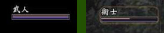
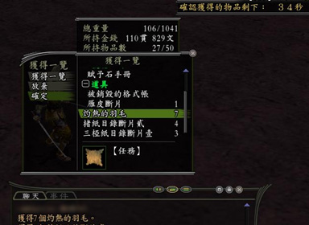
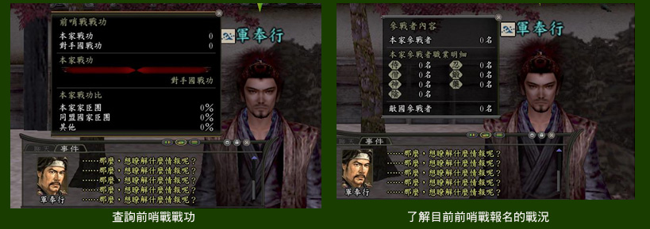
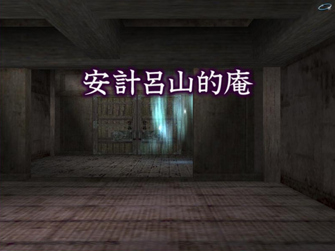
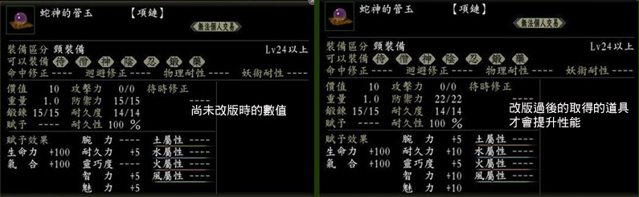

本次3/29新資料片 內容如下：
<備註：為方便查詢，所有修改＆說明頁面皆為另開新視窗>
※知行項目
1.知行【產物市場】開放，
新增 NPC 【產物商】可購買知行產物
<說明請見此>
2.知行名物也可存入置知行倉庫中 <修改後頁面請見此>
3.知行指定村役工作，所需工作天數將會顯示<修改後頁面請見此>
4.新增知行產物加工品【
麥草材】、【
櫻樹皮材
】 、【
沙丁魚油
】<新增請見此>
5.知行村役能力將已數值顯示 <修改後頁面請見此>
改版前 知行村役能力素質 |
2006.03.29 改版後 |
☆ |
1~2 |
★ |
3~5 |
★☆ |
6~8 |
★★ |
9~11 |
★★☆ |
12~14 |
★★★ |
15~ |
6.減少知行【開墾】、【商業】投資額消費金錢的速度。 <修改後頁面請見此>
7.調整知行名物販賣給 NPC 的價格，將不受初期魅力的多寡影響。
※ 功能項目
1.好友名單追加為100人，並可分類 <修改後頁面請見此>
2.增加移藉 <說明請見此> 、推舉 <說明請見此> 功能
3.增加客將功能 <說明請見此>
4.新增『全國搜索』項目，將可進行全伺服器人員搜尋，讓組隊更為快速及方便。
5.聊天文字顏色設定-增加至16種 <修改後頁面請見此>
6.新增技能目錄分類欄位 <修改後頁面請見此>
7.新增道具分類欄位 <修改後頁面請見此>
8.記錄先前視窗調整後使用的大小。
9.功能→設定新增『初始化』指令。
※系統機能項目
1.戰鬥時傷害值將會根據靈巧度影響傷害值的穩定度。
2.增加賦予上限，將依照等級、職業，限制賦予上限，人物的初期能力不會影響賦予的上限。
3.結界受到近距離攻擊時，若沒有完全受到最後的攻擊，結界的耐久度不會減少，
結界耐久度調整為受到近距離攻擊完後減少1並不會直接受重大傷害而直接消失。
4.【銳眼隊形】隊伍中隊員若等級相差16級以上，將無法選擇。
【愚者隊形】隊伍中隊員若等級相差16級以上，將無法選擇。
【逆境隊形】合戰中使用此隊形將不會累積疲勞度。<修改後頁面請見此>
5.增加前往佐渡金山的船隻。
6.御番藏、保管處、知行錢存錢上限為『999999貫999文』超過將無法存入。
7.戰鬥時受傷與回復將用紅色及藍色顯示。
8.
戰鬥時可利用『 Lv 職業顯示』 <修改後頁面請見此>
9.
適合等級若低於玩家等級 1~15 級以上將會有額外獲得修得，玩家將不需辛苦的壓等練功囉。 <說明請見此>
※ 合戰項目
1.新增合戰遠征系統 <說明請見此>
2.其他勢力對於滅亡勢力獻策好友將提升友好的效果，但是滅亡勢力對其他勢力獻策友好將會降低效果
3.合戰場將採取隨機決定，且不會與上次合戰場的地點重複。 <說明請見此>
4.在寄合所的「獻策」功能內，新增了「進軍目標」 、「援軍派遣」、「復興戰」三項功能。 <說明請見此>
5.滅亡勢力也可以進行獻策投票 <說明請見此>
6.將依照各勢力的大小，將影響所獲得的俸祿、知行村役俸祿、實行開拓指令的條件、部份知行指令執行後的結果、軍馬及火器的消費量
7.
勢力變更外交同盟及敵對將修正為更容易
8.變更合戰場中，軍師、四天王、小荷馱大將，可在取陣戰中的重生間隔時間。（縮短約四分之一）
9.變更合戰場武將弱體化條件與內容<說明請見此>
10.增加合戰場部份技能目錄掉落的npc
11.合戰兵種增加「弓兵」 <說明請見此>
12.新增NPC【輜重兵】於準備時間，休息區販賣物品，並新增軍監的【療傷】指令： 使用該指令後，受傷時間將縮短為 15 分鐘<說明請見此>
13.合戰場擊倒敵軍玩家後取得道具【髮髻】將作些許的調整，減少掉落的數量。
14.合戰場新增敵方玩家的顯示名稱【武人】、【術士】。

15.變更為依合戰場結果，國力軍資金的減少可替各個取陣戰的總和加分。 另外，根據合戰結果而減少的國力，軍資金部分也做變更
16.新增援軍身份參戰玩家，給予暫時編制的所屬隊伍，但不適用於浪人。
17. 前哨戰規則變更<說明請見此>
18.合戰將廢除持續戰果：奪取敵陣後持續戰果將不會累計。 <戰果說明請見此>
19.修改合戰結束後國力、軍餉的影響
<說明請見此>
※ 技能目錄項目-部份職業技能修正(修改後頁面請見各職業技能)
《侍》
1. 【挑戰狀】只可以對敵視及敵對的 NPC 使用。
2. 【奮戰不懈．改】減少使用的消費氣合。
3. 【奮戰不懈．極】減少使用的消費氣合。
4. 【沉默】調整技能發動的等待時間。
5. 【自制心】提升挑釁系技能抗性。
6. 【鬥志】增加機率性的格擋。 |
《神職》
1. 【神降】效果提升。
2. 【幻惑之歌】調整技能效果，提升效果延長時間及固定氣合消費量。
3. 【光雨】減少使用的消費氣合。
4. 【神之光箭】減少使用的消費氣合。 |
《忍者》
1. 【朦朧術】減少使用的消費氣合。
2. 【攻破結界】提升攻擊命中率。
3. 【攻破結界．改】提升攻擊命中率。
4. 【暗殺亂舞】提升攻擊命中率。 |
《鍛冶師》
1. 【挑戰狀】只可以對敵視及敵對的 NPC 使用。 |
《藥師》
1. 【攻擊詛咒．肆】效果提升。
2. 【攻擊咒霧．肆】效果提升。
3. 【防禦咒霧．肆】效果提升。
4. 【內鬼門】效果調整。 |
《僧》
1. 【僧兵連擊】固定攻擊傷害值。
2. 【十二天護法擊】提升攻擊傷害值。
3. 【因果報應】提升反彈效果傷害值。
4. 【仁王弁慶】新增解除指令。
5. 【魂碎擊】調整效果，將依照使用者的生命力而改變攻擊的傷害值，
使用者生命力越少攻擊的傷害值將越高。
6. 【禪】技能發動調整為「自動發動」。
7. 【懲惡】調整攻擊對象為全體。
8. 【孔雀明王法】調整效果對象為全體。
9. 【紅蓮法輪】、【凍氣法輪】減少使用的消費氣合，
配合【吟唱賦予．肆】後可省略準備動作。
|
《陰陽師》
1. 【大周天】效果提升。 (2006.03.22官網修正)
2. 【五雷法】提升攻擊傷害值。
3. 【低速咒霧．肆】效果提升。
4. 【黑暗咒霧．肆】效果提升。 |
※ 任務、NPC項目
1.任務npc重生時間調整為20分鐘
2.調整 NPC 【青龍】、【朱雀】、【白虎】任務掉落品：任務掉落品將一次滿足玩家的需求

3. 調整 NPC 【阿菊】流派試煉任務內容
4. NPC 【博學爺】新增「賦予限度」
說明 <說明請見此>
5.NPC 【軍奉行】功能變更為可查詢『上週前哨戰功績的排名』及『前哨戰戰功』、【參加者情報】

6.新增 NPC 【○○家傳令官】滅亡的勢力可透過【傳令官】了解國家動態訊息。 <說明請見此>
7.新增 NPC 【移籍助理】 <說明請見此>
※ 生產項目
1.部份生產材料進行變更
【僧】角繩 (2) ：苧麻材 Χ 2 、麥草材 Χ 1
【僧】圓繩 (3) ：絲綢 Χ 1 、蠟燭 Χ 1 <修改後頁面請見此>
【鍛冶師】鐵製鎧甲板材 (2) ：鐵 Χ 10 、巢板砥石Χ３、楢炭Χ２、頁岩原土Χ 4 <修改後頁面請見此>
【陰陽師】結袈娑：銀箔 Χ 4 、金箔Χ 3 、絲綢Χ 3 、木綿平織繩Χ 4 、楮紙Χ 10 、黑漆箔Χ１
【陰陽師】五條袈娑：銀箔 Χ 4 、金箔Χ 1 、繻子Χ 1 、皮繩Χ 4 、雁皮紙Χ 10 、黑漆箱Χ 1 、魔怪的硬皮Χ 1
【陰陽師】直垂：銀箔 Χ 4 、金箔Χ 1 、絲綢Χ 3 、絲綢繩Χ 4 、楮紙Χ 10 、透漆箔Χ 4<修改後頁面請見此> 2. 新增製作物品 【侍：木工．辛、癸、丑、卯、已】<修改後頁面請見此>
木樁：木材 Χ 4 、細繩 Χ 4
竹捆：竹子 Χ 4 、細繩Χ 4
木樁．貳：野漆樹枝 Χ１、繩子Χ 5
竹捆．貳：枯草樹 Χ 1 、竹子Χ 5
木樁．參：中等酒米的稻穗 Χ 1 、木材 Χ 8
竹捆．參：鯡魚 Χ 1 、竹子Χ 8
木樁．肆：煙草 Χ 1 、木材 Χ 12
竹捆．肆：龜甲竹 Χ 1 、編繩Χ 1
木樁．伍：衛矛樹枝 Χ 1 、編繩 Χ 3
竹捆．伍：稻草 Χ 1 、鳳尾竹 Χ 6
※ TD項目
1.TD寶箱道具增加新物品
2.增加TD怪物NPC
3.開放「安計呂山的庵」新TD地圖。 <「安計呂山的庵」介紹請按此>

※ 物品項目
1.提升上位裝備品的性能
2. 物品屬性變更
「遠江幽靈畫」改版過後價值提升為 7
「蛇神的管玉」性能提升將於改版過後的取得的道具才會提升性能

「陣法之書」物品說明變更

關於資料修正的部分，若您進入該網頁，發現並無更新，請按Ctrl+F5重新讀取頁面。
關於站上的資料提供與修正建議，都非常謝謝大家的幫忙與鼓勵，
也希望各位能繼續支持信ON基地～+_+
信ON基地every day感謝您的支持與指教m(.___.)m
|